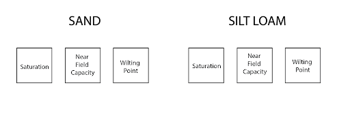
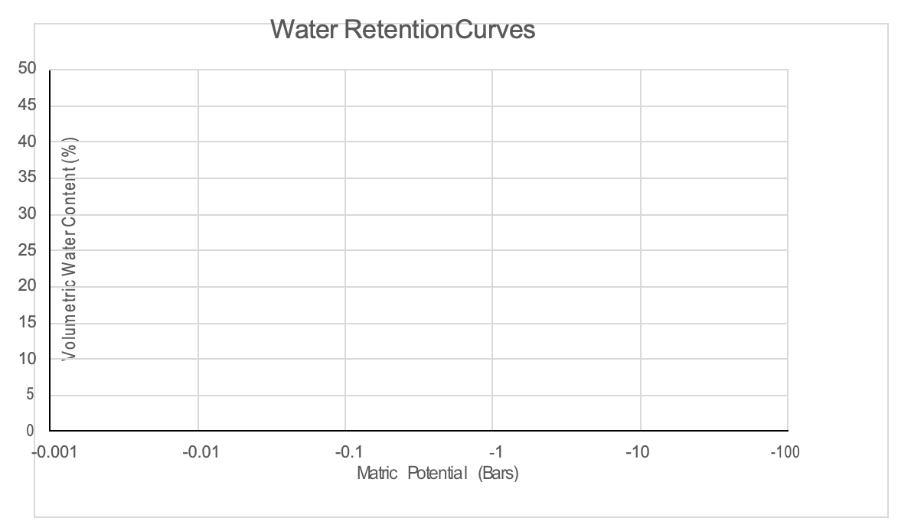

| Matric Potential (Bars) | Volumetric H2O Content (θv) | |
| Sand (@ Saturation) | 0 | |
| Sand (~FC)) | ||
| Sand (@ WP) | -15 | |
| Silt Loam (@ Saturation) | 0 | |
| Silt Loam (~FC) | ||
| Silt Loam (@ WP) | -15 |
5 Soil Water
Objectives
- Understand field capacity for soils of different textures
- Be able to use and interpret tensiometer readings
- Calculate soil water problems
Key Words & Concepts
- Tensiometer
- Field capacity
- Saturation
- Capillary action
5.1 INVESTIGATION A: Constructing Water Retention Curves
On the bench, you will see six plants. Three of these are growing in a silt loam and three are growing in a sand. We have placed these soils (and thus the plants) under different water treatments: Saturation, slightly wetter than field capacity, and wilting point:

Using a moisture meter, you will construct a water retention curve for each of these soils. You will use the moisture meter to measure the volumetric water content and the tensiometer to measure the matric potential in bars.
NOTE: WATCH VIDEO TUTORIAL ON IPADS!! If you have any questions, please ask the TA for assistance.
Fill out the following table:
Use the data from the table on the previous page to construct water retention curves (volumetric water content vs. matric potential (i.e., tension, or negative pressure) note that the scale is logarithmic) for each of these soils on the table below and answer the following questions:

- Using the graph above, estimate the total plant available water (in % by volume) for each of these soils. FC is defined as -0.33 bars and wilting point is defined as -15 bars.
- Which soil will hold more plant available water when at field capacity? WHY?
- Describe the plant responses to these different treatments (i.e. field capacity and wilting point).
- Using what you know about soil at this point in the class, describe the processes that are driving the plant response in each treatment. For example, think about why the saturated treatment looks the way it does? Why does the wilting point treatment look the way it does?
5.2 INVESTIGATION B: Determining Field Capacity
Preparation
- Weigh a small plastic tray on the balance.
- Move the weight on the far beam to 20 grams.
- With a spoon, add soil to the tray until balanced.
- Take a single sheet of the round filter paper and fold it in half and then fold it in half again. You should be able to create a small cone of filter paper that will fit inside one of the funnels.
- Once you have the filter in place in the funnel, add 20 grams of soil to the funnel.
- Carefully fill one of the graduated cylinders (BLUE base) with 25 mL of water.
- Place the funnel with the filter paper and soil on top of one of the 100 mL graduated cylinder.
- Carefully pour all 25 mL of water on top of the soil. Add about a third of the water, wait for it to be absorbed into the soil. Then slowly add the remainder. Do not add so much water at one time that it overtops the filter paper. The silt loam may take 10 minutes or so to add all of the water.
- Record the amount of water (in mL) that has passed through the soil sample and has collected in the graduated clynder. Assume 2mL of water is absorbed by the filter paper.
Repeat this process for the soils labeled Sand and Silt Loam and record your results in the table below.
Volume retained in the soil = (25mL) - (Volume retained on filter paper) - (Volume passed through the soil).
This is an estimate of field capacity.
θg at Field Capacity = (mL H2O retained) / (g dry soil), because 1 mL H2O = 1 g H2O.
Assume your 20 g of soil was oven dry.
| Volume Retained on the Filter Paper | Volume Passed Through the Soil | Volume Retained in the Soil | Calculate θg at Field Capacity | |
| Sand | 2 mL | |||
| Silt Loam | 2 mL |
- Explain why the different soil textures retained differing amounts of water.
- Which of these textures has the highest water content at field capacity?
5.3 INVESTIGATION C: Tensiometer Observation
In this investigation, you can observe the use of a tensiometer to measure matric potential (the tension at which water is pulled by the soil) for two different soils at different water contents. The tensiometer is essentially a water column with a porous ceramic tip at the bottom. The pores in the ceramic are so small that water will not move through the ceramic under the influence of gravity alone (i.e. the force of gravity does not pull down hard enough for the water to move through). However, you now know that due to adhesion, cohesion, and capillary action that soils can exert a tension on water and pull it against gravity. The vacuum gauge readings show the relative amount of tension that the soil is exerting on the water.
To make the gauges reasonable for the general public to use, scales are usually from 0-100 in positive numbers – a high reading on the gauge is caused by a dry soil that has a high tension. Note that this is different than what we discussed in lecture in that the values are positive rather than negative – these are designed for consumer use and are scaled and calibrated based on convenient numbers, not fundamental principles, but the concepts are exactly the same. These types of tensiometers are commonly used for irrigation scheduling to let the land managers know when to turn on the sprinklers, such as at a golf course.
Read the tension gauge. The units are in centibars of tension (if you put a negative in front of the number and divide by 100, you would have “bars” of tension as we discussed in class). Note how it has changed since the start of the week for each soil. Mark the current gauge reading and time on the graph so we can chart the changes throughout the week.
Tensiometer Readings:
Loamy Sand: _____________ Silt Loam: _____________
5.4 INVESTIGATION D: Observations of Capillary Action
Capillary action enables soil moisture to move in any direction within the soil as water moves from wetter areas to drier areas. Observe the different sized capillary tubes and the height at which the water reaches in each tube.
- Explain the relationship between the height of the water in the capillary tubes and the tube diameter using the terms adhesion, cohesion and gravity.
- Now observe the two soil columns – one is fine sand (particles ~ 200um in diameter) and the other a coarse sand (particles ~ 750um in diameter) and observe the height of water rise in each column. Explain the differences in the height of rise based on what you know about soil textural class, particle size, and pore size.
- The zone between the totally saturated soil material below the water surface in the tub and the highest height of rise due to matric potential is sometimes called the “capillary fringe” – it represents the height at which water has been pulled up from a saturated zone against gravity by capillary action or matric potential. Would you expect a silty clay or a sandy clay loam to have a larger capillary fringe (you might want to reference your textural triangle)? Why?
5.5 INVESTIGATION E: Determining Soil Moisture by Weight and Volume
The soil can that you prepared last week (present soil condition) has been oven dried. Weigh the oven dry soil along with the can and lid.
Using the data you recorded last week, fill in the table below:
| Property | Measurement |
| Weight of can | grams |
| Weight of moist soil + can | grams |
| Weight of moist soil | grams |
| Weight of oven dry soil + can | grams |
| Weight of oven-dried soil | grams |
| θg of moist soil last week | % |
The bulk density of the moist soil in the bucket last week was 1.3 g/cm3. Calculate the volumetric water content (θv):
5.6 INVESTIGATION F: Soil Water Problems
You need to know how to calculate the amount of water in a soil at various water potentials. This knowledge will help you understand that it is not the total amount of water in a soil that determines whether water is available to plants but it is the plant available water (PAW) that matters.
Given:
Soil Core Volume = 250 cm3 (for each soil core below)
Weight of soil core at -0.33 bar (field capacity: FC) = 420 g
Weight of soil core at -15 bar (wilting point: WP) = 350 g
Weight of soil core at present sampling time = 395 g
Weight of Oven dry soil core = 300 g
1. What is the bulk density?
- What is θg(FC)? What is θg(WP)? What is θg(at present)?
- What is θv(FC)? What is θv(WP)? What is θv(at present)?
- What is the total possible plant available water by volume? Remember, total possible plant available water (PAW) for a given soil texture is the difference between the volumetric water content at field capacity (FC) and the wilting point (WP): θv(FC) – θv(WP)?
- How many inches of plant available water would there be at field capacity if the soil layer was 3 ft. thick?
- How many inches of plant available water are left in the 3 ft. soil layer in the present condition (i.e. at the time of sampling in the field)?
- If a corn crop requires ~ 0.3 inches of water per day during the height of the growing season and the roots have access to the entire 3 ft layer you used for calculations in 5 and 6, how many days of corn growth can the current soil moisture storage support (without additional rainfall or irrigation) before the corn begins to wilt?